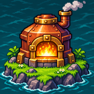

<!doctype html><html lang="en"><meta charset="utf-8"><meta name="viewport" content="width=device-width,initial-scale=1,viewport-fit=cover"><meta name="theme-color" content="#122d32"><link rel="manifest" href="manifest.json"><link rel="icon" href="icon192.png"><title>Tideforge</title>
<style>*{box-sizing:border-box}body{margin:0;background:#09262d;color:#fff2ce;font:16px system-ui}main{max-width:600px;margin:auto;height:100dvh;display:flex;flex-direction:column;background:#142e32;padding-bottom:env(safe-area-inset-bottom)}header,section,footer{padding:8px 12px}header{display:flex;align-items:center;gap:10px;background:#143639;border-bottom:3px solid #ac7544}header img{width:48px;height:48px;border-radius:8px}h1{font:bold 26px Georgia;margin:0;color:#ffdb91}small{color:#b5d5c6}button{background:#25474a;color:#fff2ce;border:1px solid #52706a;border-radius:6px;padding:8px;font-weight:bold;min-height:42px;cursor:pointer}button.on{background:#ffd58b;color:#31302b}header button{margin-left:auto}section{background:#1b393a;color:#ffdf9b;font:bold 14px monospace}canvas{width:100%;flex:1;min-height:80px;touch-action:none;image-rendering:pixelated}footer{background:#152f31;border-top:3px solid #af7f50}p{margin:4px 0 8px;min-height:34px;font-size:14px}nav{display:grid;grid-template-columns:repeat(4,1fr);gap:4px}dialog{max-width:min(380px,92vw);border:2px solid #a8774a;background:#163739;color:#fff2ce;border-radius:10px}dialog button{margin:3px}dialog::backdrop{background:#051a21bb}</style>
<main><header><div><h1>Tideforge</h1><small>Saltwind Archipelago</small></div><button id="chart">Chart</button></header><section id="stock"></section><canvas id="world"></canvas><footer><p id="hint"></p><nav id="tools"></nav></footer></main><dialog id="panel"><h2 id="title"></h2><p id="details"></p><div id="actions"></div></dialog><script src="game.js"></script></html>
